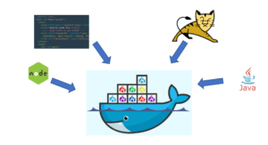

Reflexionando sobre el Futuro de la Tecnología Cliente-Servidor
A lo largo de los años, el modelo cliente-servidor ha evolucionado significativamente, adaptándose a las demandas de las nuevas tecnologías y transformándose en un pilar central de la infraestructura digital moderna. Sin embargo, el futuro de esta tecnología está lleno de oportunidades y desafíos, impulsados por tendencias emergentes que redefinen la forma en que interactuamos con sistemas distribuidos y en red.
Migración a la Nube y Servicios Descentralizados.
- La adopción masiva de la computación en la nube ha transformado la manera en que las empresas despliegan y administran sus sistemas cliente-servidor. En lugar de depender de servidores físicos locales, las organizaciones están migrando hacia plataformas como AWS, Microsoft Azure y Google Cloud, que ofrecen una infraestructura más escalable, flexible y accesible.
- El futuro verá una mayor adopción de modelos híbridos y multi-nube, donde las aplicaciones se distribuyen en varias plataformas, permitiendo a las organizaciones optimizar costos y mejorar la disponibilidad.
Microservicios y Contenedores.
- El enfoque tradicional del cliente-servidor está siendo reemplazado en muchos casos por arquitecturas de microservicios. En lugar de una aplicación monolítica que se ejecuta en un servidor central, los microservicios permiten dividir una aplicación en pequeños servicios independientes que se comunican entre sí.
- Tecnologías como Docker y Kubernetes están facilitando esta transición, permitiendo a los administradores de sistemas gestionar y escalar aplicaciones de manera más eficiente. Este enfoque no solo mejora la flexibilidad y el rendimiento, sino que también permite una rápida implementación de actualizaciones y nuevos servicios.
